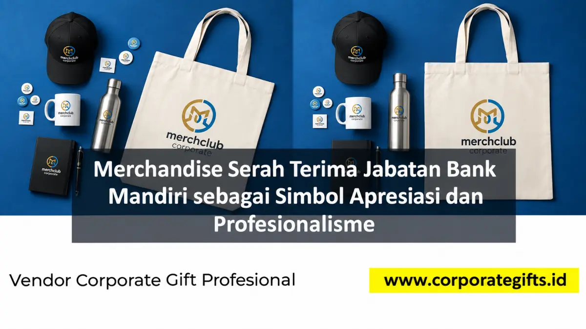

Corporate Gifts ID - Merchandise serah terima jabatan Bank Mandiri yang berkesan adalah cendera mata formal yang elegan, bermakna, dan mencerminkan profesionalisme perusahaan, seperti plakat kristal optik, pena metal premium, leather notebook, jam meja custom, atau gift set eksklusif berlogo Bank Mandiri. Pilihan terbaik memadukan bahan berkualitas tinggi, desain minimalis modern, personalisasi grafir nama pejabat, dan kemasan hardbox mewah agar menjadi kenangan yang bernilai abadi bagi penerimanya.
Serah terima jabatan (sertijab) di lingkungan perbankan, khususnya Bank Mandiri, bukan sekadar formalitas administratif. Momen ini merefleksikan regenerasi kepemimpinan sekaligus menjaga kesinambungan budaya kerja. Karena itu, merchandise yang diserahkan menjadi simbol apresiasi pengabdian dan manifestasi profesionalisme Bank Mandiri sebagai salah satu institusi finansial terkemuka di tanah air.
Poin Kunci Merchandise Sertijab Bank Mandiri:
- Simbol Regenerasi Kepemimpinan: Menandai kesinambungan budaya kerja dan estafet tanggung jawab manajerial secara terhormat.
- Material Berkelas & Awet: Memilih kristal optik K9, kulit sintetis premium, atau logam anti karat yang tahan lama dipajang di ruang kerja.
- Personalisasi Presisi: Membubuhkan ukiran nama pejabat, NIP/jabatan, dan masa bakti pengabdian menggunakan teknologi laser engraving.
- Harmonisasi Identitas Korporat: Menjaga keselarasan warna biru-emas khas Bank Mandiri pada kemasan boks dan aksesori pendukung.
- Kepatuhan Protokol & GCG: Memastikan nilai cinderamata selaras dengan batas regulasi kepatuhan (compliance) dan etika perbankan nasional.
Mengapa Merchandise Penting dalam Serah Terima Jabatan?
Dalam dunia perbankan, detail kecil mencerminkan nilai besar. Merchandise pada acara serah terima jabatan berfungsi sebagai penanda hubungan yang kokoh antara individu dan korporasi. Ketika pimpinan lama menyerahkan tampuk kepemimpinan kepada pejabat penerus, cinderamata yang berwibawa menjadi tanda terima kasih resmi atas dedikasi dan torehan prestasi yang telah diukir selama masa jabatan.
Karena citra reputasi sangat esensial bagi lembaga keuangan, tim panitia dan sekretariat pimpinan kerap mencari referensi terpercaya. Hadiah eksklusif dinilai mampu merepresentasikan kelas kepemimpinan dan wibawa profesional institusi finansial terkemuka.
Pilihan Merchandise Cocok untuk Sertijab Bank Mandiri
Untuk acara formal seremonial perbankan, cinderamata harus memiliki nilai simbolis mendalam, daya tahan bertahun-tahun, serta fungsional untuk dipajang maupun digunakan sehari-hari:
- Plakat Kristal Optik K9: Penghargaan simbolis atas masa bakti pejabat lama yang dipajang di meja kerja atau lemari piala eksekutif.
- Pena Logam Premium Berputar (Twist Pen): Fungsional dan mewah, dilengkapi ukiran laser nama pejabat serta logo korporat pada barrel pena.
- Executive Leather Notebook: Buku agenda bersampul kulit lembut dengan emboss logo Bank Mandiri, melambangkan kesiapan kerja pejabat baru.
- Jam Meja Custom Kombinasi Kayu & Logam: Kenangan monumental penanda waktu pengabdian dengan pelat kuningan ukir.
- Gift Set Eksekutif 3-in-1: Kombinasi pena metal, leather card holder, dan gantungan kunci eksklusif dalam kemasan rigid box bertekstur.

Gift set eksekutif leather notebook dan pulpen premium berpadu kemasan hardbox magnetik elegan.
Tabel Rekomendasi Merchandise Berdasarkan Posisi Penerima
Setiap pihak yang hadir dalam serah terima jabatan memiliki peran yang berbeda. Berikut tabel segmentasi cinderamata perbankan agar alokasi anggaran tepat sasaran:
| Kategori Penerima | Karakter Cinderamata | Rekomendasi Produk Corporate Gifts |
|---|---|---|
| Pejabat Lama (Mutasi/Purna) | Monumental, emosional, prestisius | Plakat kristal optik laser 3D grafir masa bakti & jam meja kayu jati |
| Pejabat Baru (Penerus) | Fungsional eksekutif, pembakar semangat kerja | Leather organizer binder A5, pulpen rollerball emas grafir nama |
| Direksi & Tamu Kehormatan | Elegan, eksklusif, kemasan mewah | Gift set 3-in-1 (tumbler suhu LED, pulpen metal, notebook deboss) |
| Undangan Staf & Rekan Kerja | Praktis, bermanfaat harian, kompak | Smart vacuum mug stainless custom logo Bank Mandiri, flashdisk kartu |
Merchandise sebagai Representasi Profesionalisme Perbankan
Dalam seremoni resmi sertijab, merchandise berbicara banyak mengenai standar tata kelola dan budaya korporat Bank Mandiri. Rancangan yang bersih, modern, dan tidak berlebihan memancarkan kedewasaan manajemen perbankan kelas dunia.
Pimpinan divisi dan unit kerja menyadari bahwa barang cinderamata bukan sekadar pemanis panggung serah terima. Kualitas fisik cinderamata adalah perpanjangan langsung dari reputasi dan integritas institusi di hadapan jajaran pimpinan internal maupun pemangku kepentingan eksternal.
6 Tips Memilih Merchandise Elegan untuk Acara Sertijab
Agar cinderamata serah terima jabatan memberikan impresi yang sempurna, perhatikan enam prinsip kurasi berikut:
- Sesuaikan dengan Makna Momentum: Bedakan peruntukan hadiah inti bagi pimpinan yang beralih tugas dengan kenang-kenangan umum bagi hadirin undangan.
- Utamakan Material Kelas Satu: Pilih bahan kristal bebas gelembung, kulit sintetis PU tebal bertekstur, atau logam paduan anti karat untuk menjamin keawetan produk.
- Sematkan Personalisasi Personal: Grafir nama lengkap pejabat beserta gelar, periode masa jabatan, dan pesan terima kasih khusus agar bernilai historis.
- Pertahankan Desain Minimalis: Hindari elemen grafis yang terlalu ramai. Sentuhan logo monokrom atau ukiran laser perak/emas terlihat jauh lebih formal dan elegan.
- Gunakan Kemasan Rigid Hardbox Magnetik: Kotak pembungkus bermagnet dengan busa cetak (sponge foam) menjaga produk tetap kokoh sekaligus memberikan pengalaman unboxing yang mewah.
- Patuhi Regulasi Good Corporate Governance (GCG): Pastikan nilai belanja cinderamata mematuhi pedoman kepatuhan internal perbankan dan aturan gratifikasi yang berlaku.
Menjaga Hubungan Baik dan Loyalitas Antar Pimpinan
Pergantian tampuk kepemimpinan sering kali memicu perubahan dinamika kerja tim. Pemberian cinderamata yang dirancang dengan ketulusan hati mampu mencairkan suasana transisi dan mempererat tali silaturahmi antar level manajerial.
Ketika seorang pimpinan yang berpindah tugas memandang plakat kristal atau pena grafir di meja kantor barunya, kenangan atas sinergi kerja yang telah dilalui bersama Bank Mandiri akan terus membakar komitmen profesionalisme di mana pun beliau bertugas.
Perbedaan Merchandise Formal vs Santai di Sektor Finansial
Konteks seremonial sangat menentukan jenis cinderamata yang layak dihadirkan. Berikut perbedaan mendasar antara merchandise formal dan santai di lingkungan perbankan:
- Merchandise Formal (Sertijab & RUPS): Mengutamakan material berbobot, kemasan eksklusif, warna netral (navy, emas, hitam), dan nilai prestise seperti plakat kristal atau executive gift set.
- Merchandise Santai (Family Gathering & Olahraga): Menitikberatkan pada aspek kenyamanan, fleksibilitas, dan warna cerah seperti t-shirt katun combed, botol minum sport, atau topi running.
Tren Corporate Gift Perbankan 2026: Personalisasi & ESG
Memasuki tahun 2026, tren cinderamata perbankan nasional bergeser ke arah integrasi nilai keberlanjutan (ESG) tanpa mengorbankan unsur kemewahan. Bank Mandiri sebagai pelopor keuangan berkelanjutan semakin banyak mengadopsi material ramah lingkungan.
Mulai dari tumbler vacuum berdinding serat bambu alami berpadu stainless steel food-grade, notebook berbahan kertas daur ulang bersertifikasi FSC, hingga kemasan boks dari serat alami tanpa laminasi plastik berlebih. Sentuhan personalisasi nama tetap menjadi standar utama untuk menghadirkan kesan intim dan eksklusif.
Pertanyaan Seputar Merchandise Sertijab Bank Mandiri (FAQ)
Kesimpulan: Simbol Pengabdian dan Regenerasi Kepemimpinan
Merchandise serah terima jabatan Bank Mandiri yang berkesan bukan sekadar souvenir seremonial, melainkan simbol penghargaan tulus, pilar profesionalisme, dan representasi reputasi korporasi di sektor perbankan. Dengan memadukan material bermutu tinggi, desain minimalis, dan personalisasi grafir nama pejabat, setiap momen regenerasi kepemimpinan akan tersimpan abadi dalam memori organisasi.
Konsultasikan pengadaan merchandise serah terima jabatan dan cinderamata perbankan eksklusif Anda bersama tim Corporate Gifts ID. Kami siap menyediakan layanan mockup desain gratis, pilihan plakat kristal optik, gift set eksekutif, serta jaminan mutu standar kepatuhan B2B.